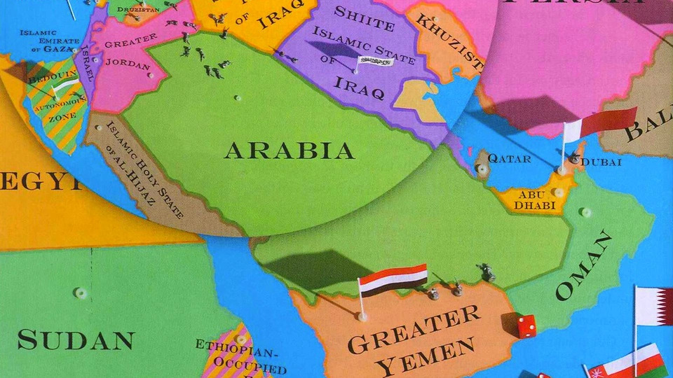

The Mediterranean is surrounded by 22 very diverse countries. These Mediterranean consists of North African, Levantine, and European countries. Each and every country has it's own unique culture with very tasteful cusines. I chose to highlight the Mediterranean Cuisine as it has been my primary diet since I have been a child. While the Mediterranean region is home to around 480 million people, they have the opportunity to enjoy fresh foods due to their geographic location.
It is important to mention that the Mediterranean coast is home to many diverse foods, vegetables, and fruits which not all people have ready access to them. It is critical to make sure that individuals accross the world recieve proper nutrition and food to live healthy lives. Even though the images on this website display the delicious foods that are present accross the regions, it doesn't mean that people always have access to them or to resources like fresh water, electricity, gas, or shelter to be able to make meals.
